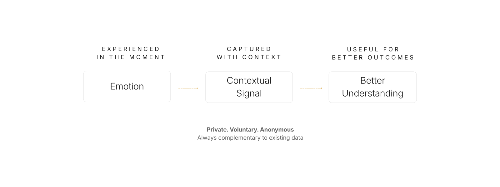
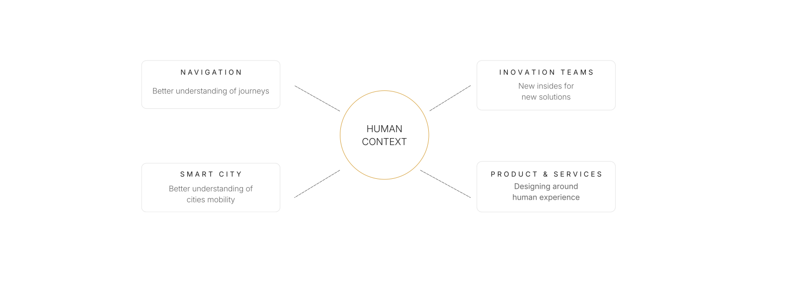

Mobility understands vehicles.
Can it better understand people?
A discussion concept for the future of mobility.
Can mobility better understand people?
ScrollCan it better understand people?
People generate experiences.
Human experience explains how people feel.
Could voluntarily shared emotions add human context?
THE MISSING CONTEXT LAYER
THE CONCEPT

A DIFFERENT APPROACH
Human experience belongs to the individual.
Sharing is always a personal choice.
No identity is required.
Designed to enrich existing mobility data, never replace it.

Emotion as a Data Signal